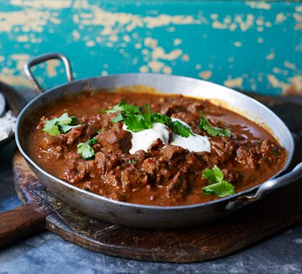

Hungarian

Hungarian Goulash
Hungarian goulash is a hearty stew originating from Hungary, typically made with tender chunks of beef, onions, paprika, and other spices, simmered to perfection for a comforting and flavorful dish.
Ingredients;
- 4 tbsp olive oil
- 1 large onion chopped
- 2 cloves of garlin, finely chopped
- 700g of stewing steak,cut into chunks
- 75mil of dry white wine
- 1 green pepper, deseeded and chopped finely
- 1 red pepper, deseeded and chopped finely
- Freshly ground black pepper
- 2 tbsp of tomato puree
- 2 diced tomatos
- 300ml beef stock
- 1tsp of italian seasoning
- 2 tbsp of paprika
- 30g plain flour
- 150ml soured cream
- Freshly chopped parsley for serving
Ingredients

Margherita Pizza
A classic pizza topped with tomato sauce, mozzarella cheese, and fresh basil leaves.
Mexican Recipes
Guacamole
A creamy dip made from mashed avocados, onions, tomatoes, lime juice, and cilantro.
Chicken Enchiladas
Tortillas filled with shredded chicken, cheese, and enchilada sauce, then baked until bubbly.
Indian Recipes

Chicken Tikka Masala
Tender pieces of chicken marinated in spices and yogurt, then cooked in a creamy tomato sauce.

Vegetable Biryani
A fragrant rice dish cooked with mixed vegetables, spices, and saffron.